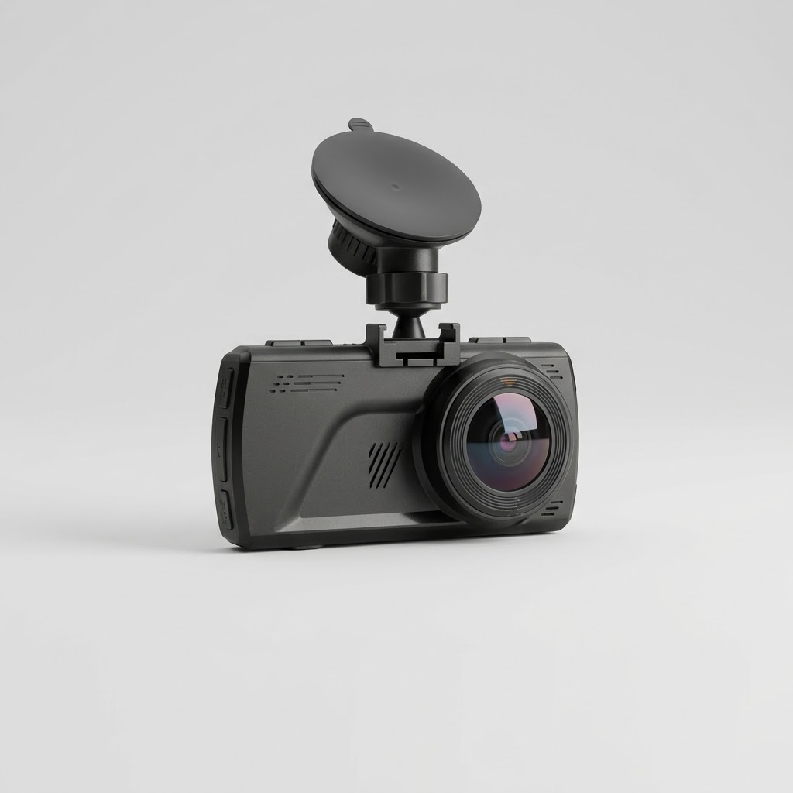
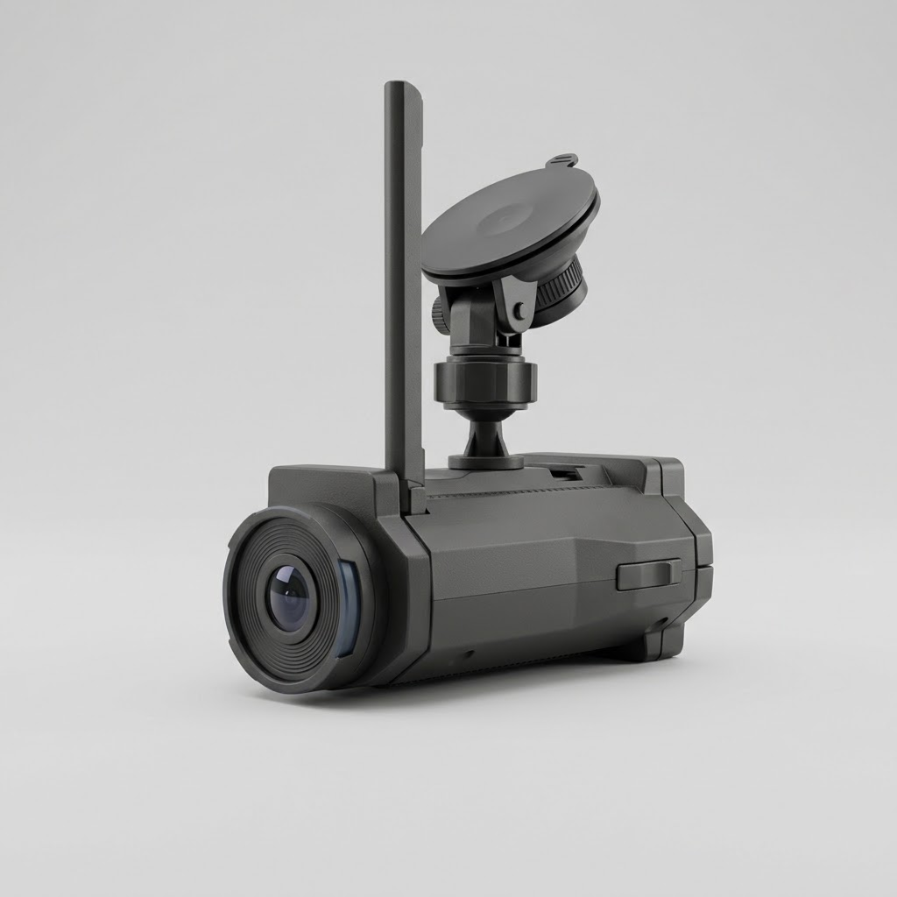
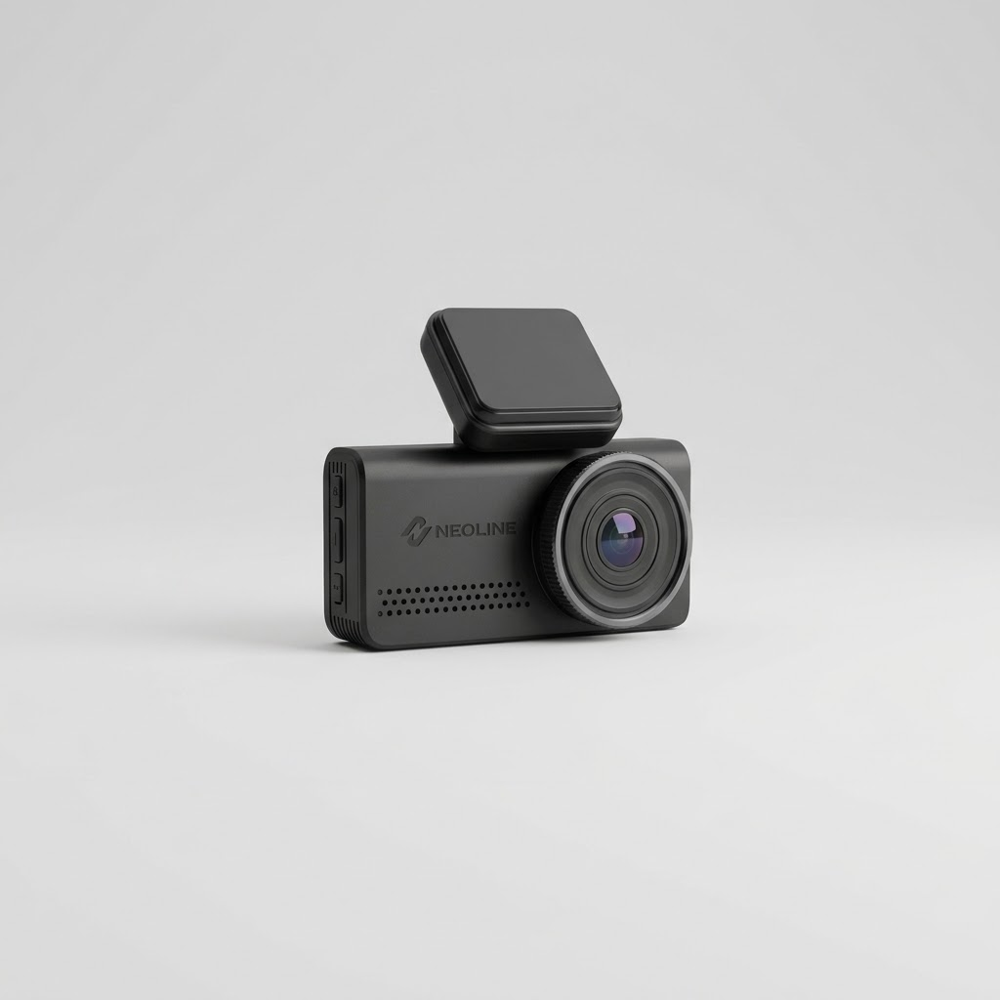
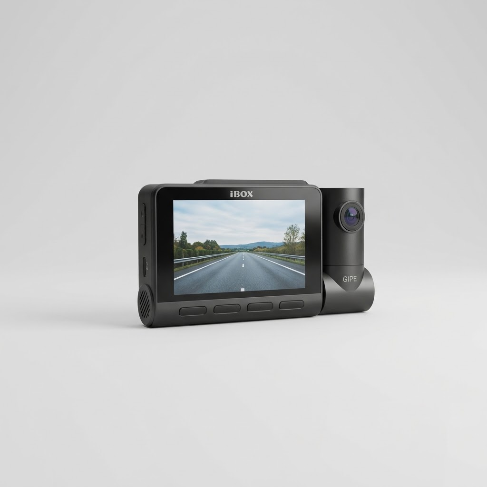
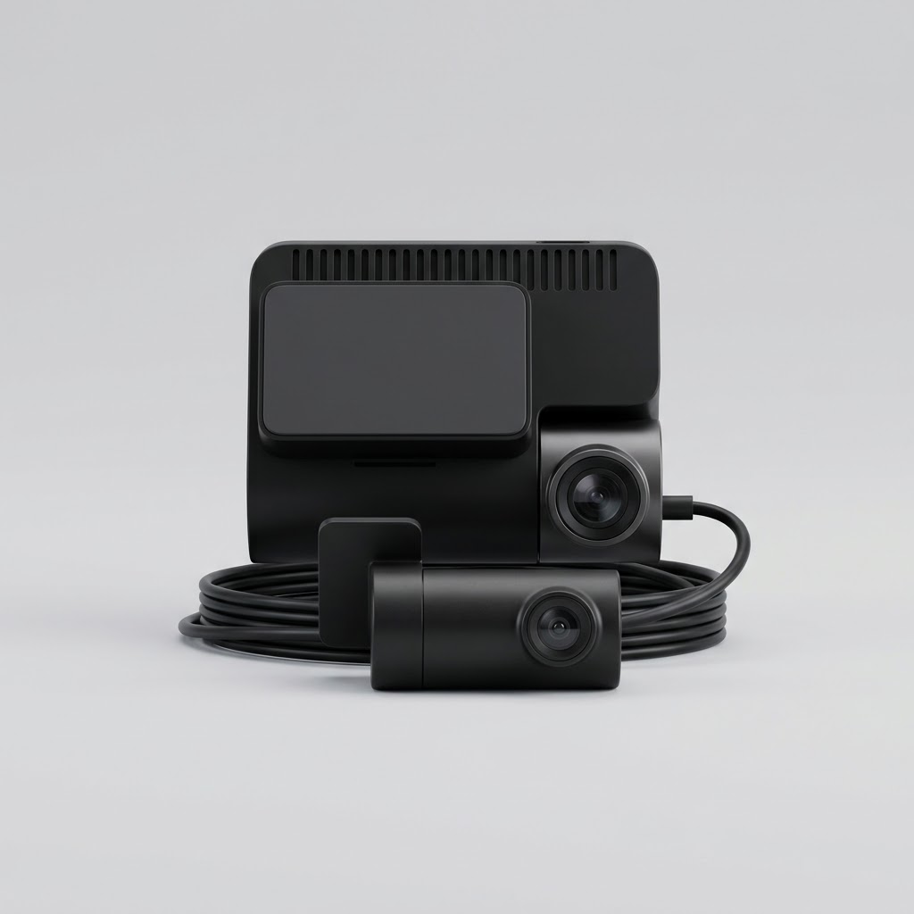

Разбираемся в характеристиках, прежде чем сравнивать
Если вы не автомобильный технарь, вот короткая расшифровка того, что означают термины в таблице ниже:
- Разрешение съёмки — насколько чётко видно детали в кадре. FullHD (1920×1080) хватает, чтобы разобрать номер машины, которая подрезала вас на соседней полосе. 4K даёт запас чёткости для тёмного времени суток и для номеров машин, которые попали в кадр издалека, а не вплотную.
- Угол обзора — насколько широко «видит» камера от края до края. Узкий угол снимает только то, что прямо по курсу; широкий (обычно у современных моделей это 140–160°) захватывает и соседние полосы — то есть больше шансов, что авария на перекрёстке попадёт в кадр целиком, а не наполовину.
- GPS/ГЛОНАСС-модуль — это не радар-детектор. Он записывает точные координаты, скорость и время каждого кадра (пригодится как доказательство в ГИБДД и страховой) и отдельно умеет предупреждать о заранее известных точках — стационарных камерах, опасных участках дороги — по загруженной базе.
- Радар-детектор — отдельная функция или отдельное устройство в одном корпусе с камерой, которое ловит реальный сигнал радара в моменте, включая передвижные посты, которых ещё нет ни в одной базе. GPS-предупреждение и радар-детектор решают разные задачи и не заменяют друг друга.
Сравнительная таблица
| Модель | Разрешение | Угол обзора | GPS/ГЛОНАСС | Радар-детектор | Цена* |
|---|---|---|---|---|---|
| SHO-ME A12 | FullHD 1920×1080** | проверить | Есть (+ Wi-Fi) | Нет | проверить |
| Neoline X-COP CITYSMART | FullHD 1920×1080** | проверить | Есть | Есть, сигнатурный | проверить |
| Neoline Argus 4K | 4K** | проверить | Есть (+ Wi-Fi) | Нет | проверить |
| iBOX RoadScan PRO 4K | 4K** | проверить | Есть + база камер (+ Wi-Fi) | Нет | проверить |
| 70mai A810S | 4K HDR** | проверить | Есть | Нет (есть ADAS + модуль 4G LTE) | проверить |
*Цены не публикуем без сверки — черновой список, требует проверки по ссылке на момент покупки. **В таблице указан заявленный класс съёмки (FullHD/4K). Точный угол обзора в градусах и параметры сенсора по каждой модели — данные производителя, требуют сверки с карточкой товара.
Рейтинг видеорегистраторов 2026 года
1. SHO-ME A12

Минимальный набор, который реально нужен для города и дачных поездок: пишет видео в FullHD, передаёт запись на телефон по Wi-Fi без вытаскивания карты памяти и знает, где стоят стационарные камеры, благодаря модулю GPS/ГЛОНАСС. Радар-детектора и 4K здесь нет — и это осознанный размен ради цены.
- Съёмка: FullHD, циклическая запись поверх старых файлов
- Wi-Fi: перенос видео на смартфон через фирменное приложение, без извлечения карты памяти
- GPS/ГЛОНАСС: база стационарных камер, метки скорости и координат в видео для доказательной базы
- Радар-детектор: отсутствует
- Самая доступная цена в подборке при живом Wi-Fi и GPS
- Не нужно вынимать карту памяти, чтобы посмотреть запись
- Компактный и простой в установке вариант «для галочки страховой»
- FullHD, а не 4K — номер машины на дальней дистанции ночью читается хуже
- Нет радар-детектора — только GPS-предупреждения по известным точкам
2. Neoline X-COP CITYSMART

Главное отличие от остальных моделей подборки — встроенный сигнатурный радар-детектор, заточенный под городской трафик. «Сигнатурный» означает, что устройство распознаёт характерную форму сигнала настоящего радара, а не любой всплеск в диапазоне частот — поэтому реже ложно срабатывает на автоматические двери магазинов и системы контроля скорости на парковках, чем дешёвые универсальные детекторы.
- Съёмка: FullHD, комбо-корпус камера + радар-детектор
- Радар-детектор: сигнатурный, с фильтрацией типичных городских помех
- GPS/ГЛОНАСС: есть, база камер и опасных участков
- Название CITYSMART: производитель делает акцент на городском сценарии использования (проверить у продавца точную формулировку позиционирования)
- Два устройства в одном корпусе — не нужно ставить отдельный радар-детектор
- Сигнатурное распознавание снижает частоту ложных тревог в городе
- GPS-база дополняет радар-детектор для известных стационарных постов
- FullHD, а не 4K — если приоритет именно в качестве картинки, лучше смотреть в сторону Argus 4K или RoadScan PRO 4K
- Комбо-корпус обычно крупнее и заметнее на лобовом стекле, чем «чистая» камера
3. Neoline Argus 4K

Argus 4K — это ставка на качество картинки, а не на максимум функций. 4K-съёмка вместо FullHD ощутимо лучше вытягивает номера машин ночью и на дальней дистанции, Wi-Fi избавляет от постоянного вынимания карты памяти, а GPS/ГЛОНАСС даёт координатную привязку для споров с ГИБДД и страховой. Радар-детектора здесь нет — это осознанный выбор в пользу более чистой и мощной камеры за те же деньги, что и гибридные модели.
- Съёмка: 4K — заметный запас чёткости против FullHD, особенно в темноте
- Wi-Fi: просмотр и выгрузка видео через приложение на смартфоне
- GPS/ГЛОНАСС: координаты, скорость и база камер в записи
- Радар-детектор: отсутствует — сделан акцент на камере, а не на комбо-функциях
- 4K-съёмка при отсутствии наценки за радар-детектор, который нужен не всем
- Компактный корпус — только камера, без лишней электроники на стекле
- Wi-Fi и GPS закрывают сразу два сценария: «доказать в аварии» и «не проехать камеру»
- Нет радар-детектора — для трассы с частыми постами придётся ставить его отдельно
- Нет ADAS и 4G, которые есть у топовой модели подборки
4. iBOX RoadScan PRO 4K

Здесь акцент сделан на самой GPS-базе: помимо стандартных стационарных камер, устройство ориентировано на более полный и часто обновляемый список точек контроля — что особенно важно в городах, где новые камеры и комплексы фиксации появляются быстрее, чем успевают попасть в дешёвые базы. Съёмка — тоже 4K, плюс Wi-Fi для быстрой выгрузки записи.
- Съёмка: 4K
- База камер: расширенная, с заявленным частым обновлением (периодичность обновлений — проверить у продавца)
- Wi-Fi: перенос видео на смартфон без извлечения карты памяти
- Радар-детектор: отсутствует — устройство ставит на GPS-базу, а не на детектор в реальном времени
- 4K-съёмка в сочетании с акцентом на актуальность базы камер
- Wi-Fi для быстрой выгрузки видео без лишних проводов
- Хороший вариант для города с большим числом камер контроля скорости
- Нет радар-детектора — от передвижных постов ГИБДД GPS-база не предупредит
- Периодичность обновления базы камер и её покрытие по регионам — уточняйте у продавца перед покупкой
5. 70mai A810S

Самая укомплектованная модель подборки. 4K HDR вытягивает одновременно яркие фары встречных машин и тёмные участки дороги в одном кадре — там, где обычная 4K-камера без HDR либо пересвечивает фары в белое пятно, либо теряет детали в тени. ADAS (система помощи водителю) предупреждает о выезде из полосы и опасном сближении с машиной впереди — это не радар-детектор, а инструмент профилактики самого ДТП, а не только его фиксации. Модуль 4G LTE позволяет через приложение посмотреть, что происходит у машины на парковке, не подходя к ней физически — в отличие от Wi-Fi у остальных моделей подборки, который работает только на близком расстоянии.
- Съёмка: 4K HDR — расширенный динамический диапазон для контрастных сцен (яркие фары + тёмная обочина)
- ADAS: предупреждение о выезде из полосы и опасном сближении с трафиком впереди
- 4G LTE: удалённый просмотр камеры через приложение из любой точки, не только рядом с машиной
- GPS: координаты, скорость, база камер
- Радар-детектор: отсутствует — набор функций сделан на профилактику ДТП (ADAS) и связь (4G), а не на детекцию радара
- 4K HDR — лучшая детализация в подборке в сложных условиях освещения
- ADAS реально снижает риск попасть в ДТП, а не только фиксирует его на видео
- 4G LTE даёт удалённый доступ к камере, когда вы не рядом с машиной
- Нет радар-детектора — для трассы с частыми постами придётся ставить его отдельно
- 4G-модуль обычно предполагает отдельную SIM-карту и, возможно, подписку на сервис — уточняйте условия у продавца
- Доставка идёт из-за рубежа (AliExpress) — сроки и условия возврата отличаются от покупок на Яндекс Маркете
Ссылка ведёт на AliExpress — доставка идёт из-за рубежа, сроки и условия возврата отличаются от заказа на Яндекс Маркете. Учитывайте это при выборе, если нужна вещь «здесь и сейчас».
ТехноГид рекомендует: Neoline Argus 4K
Если не гнаться за максимальным набором функций, а закрыть базовый сценарий «доказать свою правоту и не проехать камеру» с хорошим качеством картинки — берите Argus 4K. 4K-съёмка даёт запас чёткости, которого не хватает бюджетным FullHD-моделям подборки, а Wi-Fi и GPS закрывают и бытовой просмотр записи, и доказательную базу для ГИБДД со страховой — без наценки за радар-детектор или 4G-модуль, которые нужны далеко не каждому водителю. Если приоритет — именно радар-детектор для города, смотрите в сторону Neoline X-COP CITYSMART; если бюджет ограничен — SHO-ME A12; если нужен максимум, включая ADAS и удалённый доступ через 4G, — 70mai A810S.
Кому что подойдёт
- Городской водитель с частыми штрафными камерами: iBOX RoadScan PRO 4K или Neoline Argus 4K — упор на актуальную GPS-базу камер и чёткую 4K-картинку для разбора спорных ситуаций.
- Дальнобойщик и частые трассы: Neoline X-COP CITYSMART — сигнатурный радар-детектор ловит посты в реальном времени, чего не даёт ни одна GPS-база с заранее известными точками.
- Минимальный бюджет: SHO-ME A12 — Wi-Fi и GPS/ГЛОНАСС за самую доступную цену в подборке, без переплаты за 4K или радар-детектор.
- Топовая защита с ADAS: 70mai A810S — 4K HDR, система помощи водителю и удалённый доступ к камере через 4G, если готовы мириться с доставкой из-за рубежа.
Частые вопросы
- Какая карта памяти нужна для видеорегистратора? Для FullHD-моделей (SHO-ME A12, Neoline X-COP CITYSMART) обычно достаточно карты microSD объёмом 32–64 ГБ с поддержкой циклической записи. Для 4K-моделей (Neoline Argus 4K, iBOX RoadScan PRO 4K, 70mai A810S) лучше брать карту повыше классом скорости (класс U3 или аналог) и объёмом от 64–128 ГБ — 4K-видео занимает заметно больше места, а медленная карта может не успевать записывать поток и провоцировать сбои записи. Точный рекомендованный класс и максимальный поддерживаемый объём — уточняйте в инструкции конкретной модели.
- Как правильно установить регистратор, чтобы не мешал обзору? Штатное место — за зеркалом заднего вида, в зоне, которую и так закрывают дворники, чтобы не создавать дополнительную слепую зону для водителя. Провод питания лучше спрятать под обшивку потолка и стойки, а не тянуть по стеклу — так и салон выглядит аккуратнее, и провод не мешает обзору по бокам.
- Радар-детектор постоянно срабатывает на пустом месте — это нормально? Периодические ложные срабатывания — обычное дело для любого радар-детектора: их может вызывать автоматика дверей в супермаркетах, системы контроля скорости на платных парковках, а иногда — другие радар-детекторы поблизости. Сигнатурные модели (как в Neoline X-COP CITYSMART) распознают характерную форму сигнала настоящего дорожного радара и реже ложно срабатывают на подобные помехи, чем дешёвые универсальные детекторы, но полностью исключить единичные ложные тревоги не может ни одно устройство этого класса.